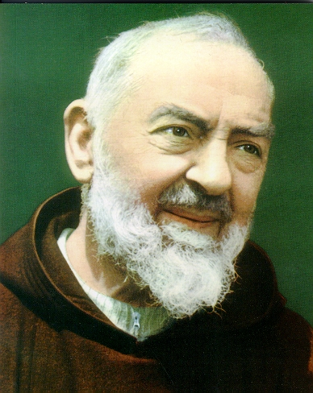
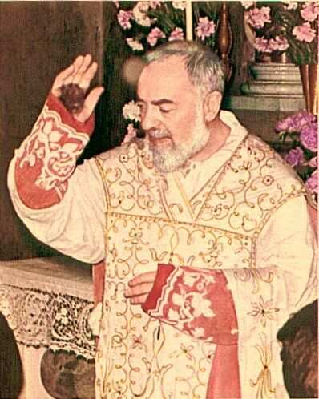

“PADRE PIO DE PIETRELCINA”
O SANTO DA OBEDIÊNCIA, DA HUMILDADE
E DO SOFRIMENTO
 


=ÍNDICE=
O ESTIGMATIZADO
ACONTECIMENTOS SOBRENATURAIS
AS TRAMAS DO DEMÔNIO
CINQUENTA ANOS DE PERSEGUIÇÕES
INFORMAÇÕES + E-MAIL + FIRMAS DE BUSCAS